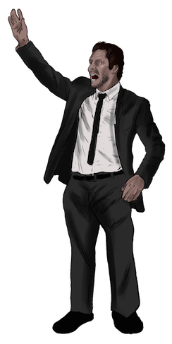

No sé si Diego Simeone trabaja de psicólogo, cirujano, veterinario o entrenador. En cualquier caso es un masajista de almas, el mejor empleado de Neptuno. Éste es su Atlético, un caza milagros que lleva toda una vida luchando por no morir. Cada uno de los 90 puntos y 77 goles que lo hicieron campeón de Liga, parecen cicatrices. A ningún equipo le dolió tanto ganar. La trayectoria del Atlético, siempre a la orilla, viviendo de lo que trae el río, remendando equipos, resanando futbolistas, puede perecer la de un pordiosero que vagabundea con salero.
Nunca una temporada definió tan bien la personalidad de un equipo como la anterior. El Atlético enterró al Barça en el Camp Nou y perdió la Final de Champions en Lisboa contra el Rey de Copas. Es el príncipe de los mendigos. Ya habrá tiempo para que el mundo juzgue, si el partisano estilo de Simeone merece ser escuela o como sucede con el fútbol jugado a matacaballo, termina siendo discípulo de la estadística.
La verdad es que el futbol del Atlético no entra por los ojos, entra por el corazón. Demasiado hizo Simeone con aquel grupo de futbolistas. Convertir en trending topic los nombres de Godín, Juanfran, Miranda o Gabi, en medio de Madrid, Barça, City o Bayern, fue una hazaña. El campeonato del Atlético de Madrid, por justo y jornalero, funcionó como adhesivo para todos los equipos que sometidos a las leyes del mercado, miran pasar todos los años futbolistas como estrellas fugaces, ante las leyes de la compraventa.
“Ya habrá tiempo para que el mundo juzgue, si el
partisano estilo de Simeone merece ser escuela o como sucede con el fútbol jugado a matacaballo, termina siendo discípulo de la estadística”
El juego de Simeone, reivindicativo en tierra de colosos, cae del lado emocional. Con impecables organizaciones entre líneas. Luchas colectivas. Atacantes solidarios en defensa propia. Brazaletes de capitán bien apretados y un discurso al interior del vestuario, que por fundamentalista, termina convenciendo al jugador de dar su vida al compañero. Allí la pelota no es un bien patrimonial pero es tratada con justicia. No es educado con ella pero a cambio la respeta mucho. No pierde el tiempo en el debate de su posesión, ni se detiene a contemplar sus costuras. La mueve honradamente, la sigue muy de cerca y la remata con puntualidad. Genera pocas llegadas y por eso, cuando pisa el área, tiene prohibido fallar. Entiende el contraataque como metamorfosis y el balón parado como placer. A pesar de ello tiene movimientos con los que zarandea rivales durante temporales de grandeza. Eventualmente es ciclónico. No busca apóstoles del balón, es un cuadro terrenal que tiene el llavero del cielo en las manos. El Atlético de Simeone ganó su quinto título en dos años y medio. La Supercopa de España que puede parecer una enorme lata, alborotó el inicio de temporada.
;){kind=link}